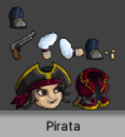

En este tema, aprenderemos a crear un esqueleto completo con los huesos necesarios para su articulación y veremos como jerarquizarlos.
Vamos a crear el esqueleto del personaje. Para ello, seleccionaremos a nuestro personaje de la carpeta de Sprites y en el Inspector pulsaremos el botón de Sprite Editor. Lo primero que vemos es el Sprite Sheet que se creó automáticamente con el Package 2D PSD Importer.

-------------------------------------------------------------------------
Seleccionar Sprite Editor y nos saldrá un desplegable donde seleccionaremos Skinning Editor.
En la parte de arriba a la derecha tenemos una opción Visibility divididas en Bone y Sprite.
Si seleccionamos Bone de momento no nos aparece nada ya que no hay ningún hueso pero si seleccionamos Sprite nos aparecerán los sprites que tenemos. Podemos esconderlos………
AÑADIR IMAGEN

También en Visibility tenemos dos deslizadores: • Para ver la visibilidad de los huesos. • Para ver la visibilidad de los Sprites mallas. Nos aparecerán 3 opciones: Bones, Geometry y Weights que iremos viendo poco a poco.
Create bone: Esta opción es la que usaremos para crear los huesos. • Si acercamos el puntero a nuestro personaje aparecerá un punto rojo y pulsando y arrastrando con el click izquierdo creara el hueso. • Ese punto rojo será el centro de la rotación de nuestro hueso. Hueso principal que será el Cuerpo. • Selecciono la parte de abajo del cuerpo y subo el ratón hasta el extremo superior y doy click para finalizar.
A medida que vamos creando huesos aparecerán en Visibility/Bone. • Si sigo arrastrando el ratón desde el último punto aparecerá un línea amarilla para hacer otro hueso que dependa del anterior.
• Podríamos hacer unido con el cuerpo el hueso de la Cabeza.
Si ya no quiero poner más huesos pulsaría el botón derecho del ratón. Observamos que en el menú de Visibility el Cuerpo tiene un hijo. Se pueden ir cambiando los nombres de los huesos para verlo más claro. Si los puntos de rotación no nos han quedado muy bien seleccionarlo con Edit Bone el punto podemos arrastrarlo a la posición correcta. Hacemos ahora los huesos de los Brazos: Quiero que el brazo quiero que se mueva cada vez que gire o se mueva el cuerpo así que el brazo tiene que ser hijo del cuerpo: • Acordarse de seleccionar Create Bone para poder crearlo. Así que selecciono el punto de rotación del cuerpo y lo arrastro hasta donde quiero que sea el punto de rotación del brazo izquierdo (hacia el hombro) de ahí vamos al codo, otro hasta la muñeca y luego hasta la mano.
Si nos molestan el resto del cuerpo para hacer los huesos ponerlos invisibles en la opción de Visibility donde aparece un ojo. • Hacemos lo mismo con el brazo derecho.
Cada vez que mueva el cuerpo también se van a mover los Piernas: • Hacemos primero una pierna y luego la otra. He escondido el Sprite del Cuerpo para ajustarlo mejor.
Dentro de Visibility en la opción de Bone también podemos reorganizar los Huesos o los Sprites arrastrándolos a lo largo de la lista (por si nos hemos confundido al asignarle a un padre…) y alternar la visibilidad de los huesos. Después de hacer todos los huesos y haberlos renombrado se nos quedara de esta forma:
Otra opción dentro de Bones es Split Bone que nos ayudara a dividir huesos: • Seleccionamos un hueso y pulsamos ese botón y volvemos al hueso vemos que aparece un punto que se va moviendo con el ratón. Con el ratón izquierdo se acepta y con el derecho se cancela.
Para añadir otra articulación donde la necesitemos. Una vez hecho los huesos que necesitamos activamos el Preview Pose: • Si selecciono el hueso del brazo y lo muevo con el botón izquierdo del ratón vemos que se rota el hueso del antebrazo.
y damos CTRL+Z para deshacer y que vuelva a su sitio. Si vemos que hemos hecho muchos cambios podemos pulsar el botón Reset Pose y hará un Reset para que los huesos se pongan en el estado en el que se crearon. • Si giro desde la mano no cambia ningún hueso. Porque no tiene hijos asociados.
• Si giro el del cuerpo se moverá todo.
• Probarlo con los brazos y los pies. • Si selecciono el punto de rotación del Cuerpo y lo muevo el Cuerpo se mueven las piernas porque son hijos del Cuerpo pero NO quiero que se muevan así.
Lo que queremos es que se mueva el Cuerpo pero las Piernas que NO se muevan o que cuando rotamos el cuerpo que NO roten las piernas. Lo que haremos es crear un Hueso Principal que será hijo el Cuerpo y cada Pierna: • Pulsamos Create Bone en la parte de debajo de nuestro personaje y nos aparece un punto. Cuidado de no tener seleccionado ningún hueso ya que lo haría hijo de ese hueso. Para quitar esa selección click derecho.
• Se suele poner ese punto en el centro de los Pies pero para que sea más fácil de seleccionar lo arrastramos un poco hacia abajo.
Este hueso lo necesitamos cuando queramos mover todos los huesos del personaje a la vez. Lo llamaremos Principal. • Ahora tenemos que hacer que las piernas sean hijos del hueso Principal. Así que lo arrastramos al principio y ponemos al resto como hijos.
Para borrar un hueso nos ponemos en su rotación y con la tecla SUPRIMIR.
• Acordaros que las Piernas tienen que ser hijos del Principal así que habrá que arrastrarlos. Puedo seleccionar las Piernas con el SHIFT y moverlas las dos a la vez. Así Principal tendrá 3 hijos. Probarlo: • Si muevo el Cuerpo se moverla con la cabeza y los brazos o también puedo pinchar en la Rotación y puedo simular subiendo y bajando que está respirando. Independiente de las piernas. • Y si muevo solo las piernas no se moverá el cuerpo. • Lo interesante es si muevo el Principal se moverá todo.
Faltaría ver de los Bone la Depth (Profundidad). Esto es para cuando un Sprite necesite pasar por encima o por debajo de el mismo. El orden en el que se dibujaran los Sprites vendrá definido por el orden de las Capas del archivo .psd. Esto ahora no valdrá para mucho: • Si se pone un valor es más alto se mostrara por encima de otros Sprites que tengan una profundidad más baja. • Si no lo hemos puesto bien en el .psd lo podremos cambiar aquí. Quedaría tal que así:
Para que se quede todo bien grabado tendríamos que dar a Apply para aplicar los cambios que hemos hecho.
Si pinchamos sobre cada uno de los huesos, podemos ver como quedarían las distintas articulaciones.
Volver al índice